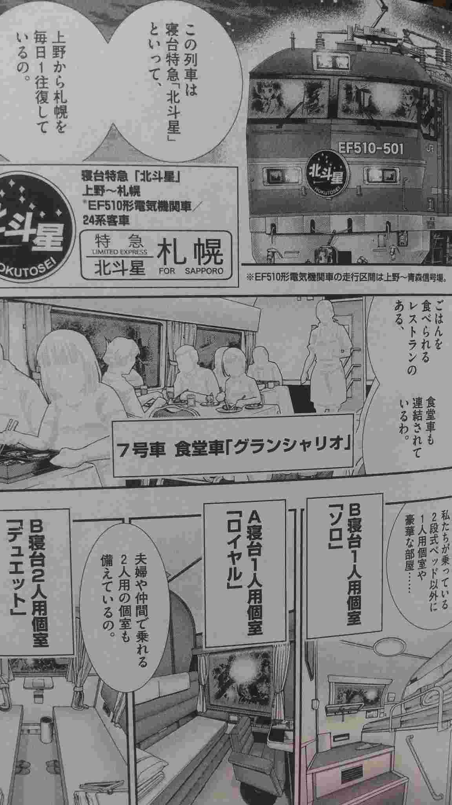
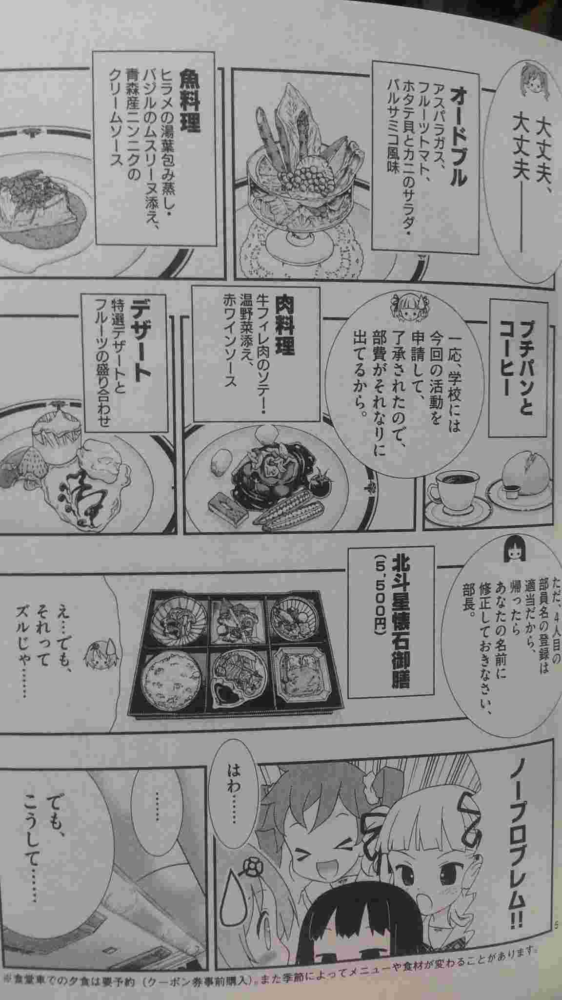

好きな本の紹介とか
ゆりてつ～私立百合ヶ咲女子高鉄道部～ (2014/01/21)
鉄道マニアというものが、何だが良いイメージがないのが現実でしょう？
ニュースや新聞で、人様に迷惑をかけているというイメージがあるかもしれません。
ですが、電車に乗って、駅弁などと食べながら移動し、沿線駅の周辺の観光スポットに立ち寄り、景色や珍しい車両の写真を取る。
やっていることは、ただの電車での観光旅行とも言えなくはないでしょうか？
私は「鉄」ではありませんが、機械や乗り物は嫌いではありませんし、美味しいものは好きです、観光旅行も悪くは無いですよね。
最近、男の子の趣味を、女の子のキャラクターで描かれたもので、私がこれは面白いなって思った作品の一つが
「ゆりてつ～私立百合ヶ咲女子高鉄道部～ 」です。
高校で、変わった部活を発足するという最近流行りの設定ではありますが、こういう電車をテーマにしたマンガは今までになかったと思っております。
主人公の女の子(鉄道に興味を持っていない普通の子)がひょんなことから、学校の仲間と鉄道部を結成することになって、日本全国、北は北海道から南は九州まで鉄道旅行をするというとんでもない設定のマンガです。
そして入学直後の部の結成時にいきなり北斗星で上野から札幌まで電車旅行という現実ではなかなかできないお話ですが。(そこはマンガなので、突っ込まずに)
鉄道の歴史から車両や設備、駅弁などのグルメ情報、鉄道好きなら押させておきたい観光スポット、撮影スポットなど細かい情報が満載です。

北斗星の概要説明
(クリックで拡大)
作者："松山せいじ"が鉄道に精通していこともありまして、鉄道の説明はおろか、観光名所や駅弁やその地のグルメスポットの情報量が多く、鉄道や車両景色など非常に細かく丁寧に描かれているので、旅番組を見ているような気分にさえさせてくれます。
また、登場人物も魅力的で幅広く、写真を取ることがメインの「撮り鉄の子」、食べることが大好きな「食べ鉄の子」、「ちょっとオタクで、アニメの舞台になった地を旅することが好きな「乗り鉄の子」など、登場人物の個性が強く、可愛らしく描かれており、鉄道にあまり詳しくない方でも楽しめる内容になっております。

北斗星のグルメ説明
(クリックで拡大)
タイトルに「ゆり」とありますが、百合要素は薄めであり、自分がそういうジャンルにあまり詳しくはありませんが、自分のような人でも抵抗なく物語に浸れました。
以前に私つぶやいたとおり、登場人物が全員女の子なので、鉄道マニアと言う、暗いイメージを感じさせることなく、鉄道旅行や「鉄」の世界を楽しめるのが特徴です。
ひとりごと「ゲームやアニメのキャラクターの性別について」参照
短所を挙げるとすれば、マンガの割には情報量が多いので読むのに疲れる。
話が強引すぎたり、展開が早過ぎる部分ある。ということくらいです。
普段鉄道を利用することがない人も毎日利用している人も
まったりと鉄道旅行の気分に浸るのはいかかでしょうか？
ちなみに、最近完結しました。全４巻となっております。

女子高生４人が織りなす、ふんわり日常系鉄道ライフ、出発進行！！ 精密な鉄道描写とキュートな美少女が絶妙マッチング！！ 豪華車両・秘境駅・アニメ聖地…ゆりてつ部メンバーが、ステキな鉄道旅行にご招待！！